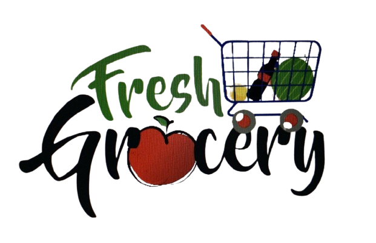

- Your Daily Grocery PartnerAt FreshMart, we are redefining the grocery shopping experience by bringing freshness, quality, and convenience right to your doorstep. Founded with a vision to simplify grocery shopping, we offer a wide range of handpicked fruits, vegetables, daily essentials, and household items — all at competitive prices.
We work directly with farmers, trusted suppliers, and local vendors to ensure that every product we deliver is fresh, sustainable, and fairly sourced. Our user-friendly platform and fast delivery network empower busy individuals and families to shop smarter and live healthier.
We source directly from local farms to ensure every bite is full of freshness and flavor.
Get your groceries delivered the same day or schedule delivery as per your convenience.
From organic vegetables to daily dairy, snacks, grains, and more — we’ve got it all.
We believe in building trust through transparent service, easy returns, and prompt support.
“FreshMart never disappoints! The fruits and vegetables are always fresh and delivered on time.”
“Great selection and easy checkout. The quality is top-notch, especially the organic range.”
“I’ve been using FreshMart weekly. Saves me time, and everything is hygienically packed.”